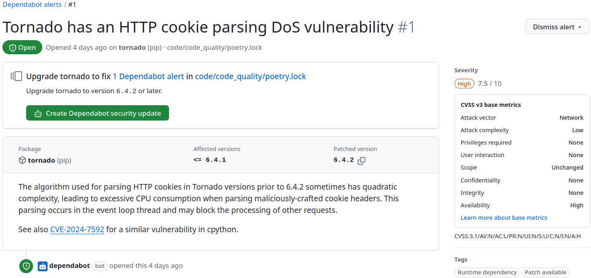

what to automatize?
everything
more precisely, repetitve tasks | scripting: writing relatively short and simple code to automatize an otherwise manual process

in a software development context
- style guide compliance
- code smell finding
- code quality measurement
- review
- building
- testing
- deployment
linting
- a linter in modern editors behaves like a spell checker in a word
processor
- gives immediate feedback on syntax errors, styling issues or bad practices
- can detect some code smells
- traditionally linters were developed for languages, then linter
plugins for editors
- so language support in editors were not evident
- Language Server Protocol (LSP) was developed (originally at Microsoft), providing a common interface for linters

auto formatting
- there are automatic code formatters for more and more languages
- that can reformat the source code to align with the style guide
- usually triggered by saving the file
- usually configurable to align with organization / project specific rules
- some examples:
well configured editor
- can help keeping the feedback loop fast
- auto formatter
- linter
- running test
- decrease cost
- immediate feedback
- less refactoring (later), less review finding
- developers can focus on non-automatable tasks

importance of personal preferences!
that is why I previously said that trust in your IDE
ruff - Python linter and code formatter

version control
- version control (a.k.a. revision control) is system for recording and managing changes made in files
- commonly used to manage source code
- however, it can be used to tracking changes to any kind of files
- people often employ their own version control system, without realising it
based on Simon Mutch’s Version Control materials
 | [source](https://gist.github.com/smutch/4951871)](figures/borrowed/vc-xkcd.jpg){kind=link}
why you should use version control (for everything)
In practice, everything that has been created manually should be put in version control, including programs, original field observations, and the source files for papers.
– Best Practices for Scientific Computing; Wilson et al. 2012 (arXiv:1210.0530)
this presentation is under version control as well
Many services have some kind of version control built in. For example Google Docs or Microsoft Word also provides some level of version control.
benefits of version control systems
- generate backups
- separates experiments from the working version
- branching, deployment strategies (much later in the course)
- keep history and track changes
- traceability
- foster collaboration and contribution
- team work
The current level of software complexity is not manageable without allowing many people to work on the same code base, and the separation of the development versions from the production one.
collaboration via version control systems
- scrum development team
- multiple task on the sprint backlog
- developers start to work on different tasks
- the time to complete a task varies
- work items need to be merged to the common code base / repository
- version control systems are used to solve this issue


file sharing issue


the figures are based on Figure 2.2 of the TortoiseSVN documentation
lock-modify-unlock solution


one developer can edit a file at the same time – not very effective
the figures are based on Figure 2.3 of the TortoiseSVN documentation
copy-modify-merge solution

the figures are based on Figure 2.4 of the TortoiseSVN documentation
copy-modify-merge solution #2


example: git, mercurial
the figures are based on Figure 2.5 of the TortoiseSVN documentation
centralized vs. distributed version control system

example: subversion

example: git, mercurial
the figures are based on Version control concepts and best practices - by Michael Ernst (Ernst, 2012)
feature branching

- copy-modify-merge version tracking gave a viable solution for parallel
development
- but separating the “workspace” is still beneficial
- each developed feature has its own branch, which is merged to the mainline after completion
when to make a commit?
- when you completed a unit of work
- when you have changes you may want to undo
source: When to make a Git Commit (McCreary, 2017)
branching strategies
- branching is more than just separating workspace, work-in-progress
code from released
- also for managing stable (released) versions
- and bugfixing though multiple versions
- A successful Git branching
model
(Driessen, 2010)
- introduced in 2010
- a criticism: A succesful Git branching model considered harmful (Judin, 2016)
- a comparison of branching strategies (Shipp, 2019)
continuous integration (CI)
Continuous Integration is a software development practice where each member of a team merges their changes into a codebase together with their colleagues changes at least daily.
– Martin Fowler (Fowler, 2024)
- emerged from extreme programming
- considered an agile approach
- gives immediate feedback
- the integration (merging) will fail if two branches are not compatible
- and build the integrated software
- also gives opportunity to do testing on the built software…
continuous integration

continuous integration environment

What happens here is that the developer pushes a change to the version
control server, which can be(depends on the configuration) a trigger.
Based on the trigger the CI environment start a runner. A runner can be,
for example, a linux instance running in a virtual machine or in a
container. In the newly started environment, the changes are fetched.
Considering git as a version control system, fetching means clone and
checkout operations. As the CI environment is “empty”, in a sense that
it does not contain any of the software code, the code repository has to
be cloned every time. Then, the right version, defined by the trigger
should be selected using the git checkout command. After the software
version to be tested is available, the build script should be executed.
Optionally with static code analysis, tests, and so on, then the reports
are generated.
If the build or the tests did not succeed a notification is sent to the developer(s), and any other stakeholder who are subscribed. If the build (and tests) succeeded, notification are usually only sent if the previous build failed, preventing unnecessary noise.
build script
- traditionally called build script
- responsible not only for building the software
- but also for running tests, generating reports
- code coverage
- and even for packaging the software
example: build script of the course website
scheduled build

The trigger can be also be a scheduler, so a build / test running can be executed without explicit change of a new push.
nightly build
- scheduled build during night time
- typically includes a smoke test
- building a the latest version of a software, on a daily basis
- originally scheduled to night time because for large software a full build (with all tests) could take hours

also known as daily build
continuous deployment
- continuous integration ensures everyone integrates their code to the mainline (Fowler, 2024)
- “Continuous Deployment means the product is automatically released to production whenever it passes all the automated tests in the deployment pipeline.” – Martin Fowler (Fowler, 2024)

continuous deployment environment

- extension of a continuous integration environment
- deployment is another stage in the build script
- same triggers as in a CI environment (not just the scheduler)
blue–green deployment (Wikipedia contributors, 2024a)

- two servers are maintained (“blue” and “green”)
- expensive
- at a given time, only one server is handling public request
- the other can be accessed only from a private network
- changes applied to the non-live server and verified
- when verified, the non-live server is swapped with the live server

shadow deployment

- two servers are maintained (“live” and “shadow”)
- for testing the performance and stability requirements
- on success, the release can be deployed to the live server as well
- specialized strategy, complex and (relatively) expensive to set up
canary deployment
- deployment in an incremental fashion
- starts with a small number of users
- and continues until 100% is reached
- allows to test updates in live environment
- on small groups of users
- before deploying to many users
- may involve telemetry

A/B testing is more of a testing approach than a deployment technique, but it works similarly to canary deployment. It involves reviewing two versions of updates in small set of users to identify which version perform better. (Kazim, 2023)
devops
- software development + IT
operations
- collaboration
- agile mindset, set of principles (GitLab, 2022)
- automation of the SDLC
- collaboration and communication
- continuous improvement
- focus on user needs with short feedback loops
- relies on automatization, CI and CD
- to build, test and release better software
- frequently, reliably, rapidly

{kind=link}
further reading: 11 DevOps Principles and Practices to Master: Pro Advice - by Fernando Doglio
what tools to use?
- CI and
CD became a
fundamental part of software development
- got integrated into services like GitHub, GitLab, BitBucket, JetBrains Space, Forgejo
- some solutions:
- Jenkins
- open source, self hosted
- GitHub Actions
- integrated to code hosting, free options
- example: course repository
- GitLab Pipelines
- integrated to code hosting, free options
- Travis CI
- free for open source projects
- Circle CI
- free options
- Jenkins

- Jenkins logo – The Jenkins project http://jenkins-ci.org/ | CC BY-SA
- GitHub icon – Font Awesome Free 5.4.1 by @fontawesome - https://fontawesome.com | CC BY
- GitLab icon by 292Jacob | CC BY-SA
{kind=link}
{kind=link}
automatized review
- using CI environment
- do static code analysis
- analyzing the code without execution
- searching for syntax errors, styling issues, bad practices or code smells
- run test suite
- generate review report from the findings
should not replace human reviewing
just decrease the work by automatizing trivial tasks

automatized review – example
- CI services integrated into the code hosting / developer platforms
- code changes can ba annotated by automatized review findings
- usually at a pull request level
- a bit slower feedback than running static analysis or test locally

vulnerability alerts
- Common Vulnerabilities and Exposures (CVE)
- a dictionary of common names (i.e., CVE Identifiers) for publicly known information security vulnerabilities (Wikipedia contributors, 2024b)
- Apple’s “goto fail” issue is officially called CVE-2014-1266
- GitHub
Dependabot
- uses package manager
- e.g., cargo (Rust), npm (JS), nuget (C#), maven (Java), poetry or uv (Python)
- checks dependencies for vulnerabilities
[tool.poetry.dependencies]
python = "^3.12"
numpy = "^1.26.3"
pandas = "^2.2"
geopandas = "^1.0"
networkx = "^3.2.1"
osmnx = "^1.6.0"
matplotlib = "^3.8.2"
seaborn = "^0.13.0"
contextily = "^1.3.0"
opencv-python = "^4.9.0"
pyaml = "^23.9.7"
pyogrio = "^0.7"
pyarrow = "^15.0.0"
scipy = "^1.12.0"
haversine = "^2.8.1"
mapclassify = "^2.6.1"
openpyxl = "^3.1.2"
ecomplexity = "^0.5.2"
structlog = "^24.1.0"
h3 = "^3.7.7"
pandarallel = "^1.6.5"
jinja2 = "^3.1.4"
tabulate = "^0.9.0"
Python dependencies managed by poetry
GitLab also has a similar solution
dependabot example
remote: Resolving deltas: 100% (5/5), completed with 4 local objects.
remote:
remote: GitHub found 1 vulnerability on pintergreg/software-engineering's default branch (1 high). To find out more, visit:
remote: https://github.com/pintergreg/software-engineering/security/dependabot/1
command line warning after git push
dependencies
- choose carefully the software packages / components your software will depend on
- use well maintained software modules
- unmaintained modules have potential vulnerabilities
- aim for loose coupling regarding the dependency
- makes it easier to replace if needed

I always advocate that do not reinvent the wheel. If there is a common task, it is probably better to use a library that already implements the function. On the other hand, always be careful which package you depend on. Unmaintained modules have potential vulnerabilities. Aim for loose coupling regarding the dependency, which makes it easier to replace if needed. Also, think over depending on a huge package (with multiple dependencies itself) for just a single function.
daily work
- select a task from backlog
- read and understand it
- create a feature branch

- write code, possibly using TDD
- local unit testing, checks
- open a pull request (initiate merge)

- pull requests used to manage review
- trigger for CI to run automated tests, static code analysis, generate reports, etc.
- while your work is reviewed, start working on another task / review other’s work

- if everything is fine, the task is done
- eventually the change will be in production at the end users
- as a part of a release
- a release can group together multiple changes
- then, scrum start a new iteration, or kanban continues as always
- using some kind of deployment strategy

release versioning
- a software release is identified by a version number
- often seen as an arbitrary number
pre-releases
- alpha: incomplete feature-wise, external release is uncommon for
proprietary software
- whitebox testing
- beta: the software is feature-complete but contains several known
or unknown bugs
- blackbox testing
- rc: release candidate, final touches
- highest level testing

- odd number for development (4.1), even for stable (4.2)
- Chromium: 131.0.6778.69
- after GNOME 3.38, the “3.” was dropped and GNOME 40 vas released
- Java 1.6, 1.7,
1.8, 8, 9, 10…
- Java 1.6, 1.7,
- Linux 5.19, 6.0
- “So, as is hopefully clear to everybody, the major version number change is more about me running out of fingers and toes than it is about any big fundamental changes.” – Linux Torvalds
- since version 3, TeX has used an idiosyncratic version numbering
system (Wikipedia contributors, 2024c)
- where updates have been indicated by adding an extra digit at the end of the decimal, so that the version number asymptotically approaches π
- last version is 3.141592653 (released in 2021)
semantic versioning

- major version when you make incompatible API changes
- a way of communicating changes
- minor version when you add functionality in a backward compatible manner
- patch version when you make backward compatible bug fixes
additional labels for pre-release and build metadata are available as
extensions to the major.minor.patch format | from
semver.org
optional reading: Why I don’t like SemVer anymore
calendar versioning

format examples:
- YYYY.MINOR.PATCH
- micro is used instead of patch
- YYYY.MM.MINOR.PATCH
“CalVer is a versioning convention based on your project’s release calendar, instead of arbitrary numbers.” | calver.org
ZeroVer: 0-based versioning
“Your software’s major version should never exceed the first and most important number in computing: zero.” | 0ver.org
- e.g.: 0.4.1
- popular among open source software projects
- some may reach 1.0.0 eventually
semver: “If your software is being used in production, it should probably already be 1.0.0.”

Fibonacci releases
| version | type | release date | delta |
|---|---|---|---|
| 6.1.0 | Release | Tue 2024-06-18 | 0 |
| 6.1.1 | Bugfix Release | Tue 2024-06-25 | 1 |
| 6.1.2 | Bugfix Release | Tue 2024-07-02 | 1 |
| 6.1.3 | Bugfix Release | Tue 2024-07-16 | 2 |
| 6.1.4 | Bugfix Release | Tue 2024-08-06 | 3 |
| 6.1.5 | Bugfix Release | Tue 2024-09-10 | 5 |
KDE / Plasma 6.1 series release schedule
interruption

interruption
- the greatest “enemy” of a developer is interruption
- the code is one thing, the logic behind it is another
- takes time to understand
- context switching is costly
- switching between tasks
- that is why it is advisable to define small tasks during the sprint
planning
- 1–4 hours, but ideally closer to 1
- preventing interruption
- a programmer probably get one uninterrupted 2-hour session in a day (Parnin, 2013)
the cost of interruption
- according to a study, the average lost time per major interruption is
23 minutes (Mark et al., 2008)
- for developers, it could be worse
- according to another study it is at least 15 minutes (Parnin, 2013)
- “getting back to the exact state of mind you were at right before an interruption is nearly impossible” (To, 2018)
- interruptions can be planned and unplanned

source: The Cost of Interruption for Software Developers – by Steven To (To, 2018)
planned and unplanned interruptions
unplanned
- someone asks about something or to do something
- usually a small task
- informal review, advice, etc.
- usually a small task
- mitigation
- wear headphones (in open offices)
- notify in advance
planned
- meetings, including standup
- standup is usually the first thing in a workday, not to divide the work time until lunch
- a wrongly placed meeting can be even worse than an unplanned
interruption
- you have to keep in mind that you have a meeting, cannot start anyting serious
- mitigation
- schedule small, easy tasks before meeting
source: The Cost of Interruption for Software Developers – by Steven To (To, 2018)
techniques to minimize context switching
- time blocking
- divide workday into blocks
- time batching
- do similar tasks in a batch
- prioritize tasks
- tackle the biggest task first in the morning
- turn off notifications
- adopt asynchronous communication
- e-mail, documentation, ADR
source: The high price of context switching for developers & ways to avoid it (Pande, 2021)

pomodoro technique
- time management method, developed by Francesco Cirillo in the late 1980s
- “Pomodoro” means tomato in Italian
- you must take a 5-minute break after every 25 minutes of work (aka session)
- after 4 “Pomodoro” work sessions, take 15-30 minute longer break
- 100 minutes of work time with 15 minutes of short breaks
It’s not about squeezing as many tasks as possible into a day. It’s about taking the time to do things right and giving yourself the space to breathe.
– Francesco Cirillo

read more: The Pomodoro Technique: What It Is & How It Boosts Productivity by Leon Ho (Ho, 2025)
summary
automatize as many things you can
to gain immediate feedback
and decrease interruptions
- linters, static code analysis
- style guide compliance
- code smell finding
- CI/CD
- review, building, testing, deployment
- vulnerability alerts
references
Driessen, V. (2010). A successful git branching model. https://nvie.com/posts/a-successful-git-branching-model .
Ernst, M. (2012). Version control concepts and best practices. https://homes.cs.washington.edu/~mernst/advice/version-control.html .
Fowler, M. (2024). Continuous integration. https://martinfowler.com/articles/continuousIntegration.html .
GitLab. (2022). 4 must-know DevOps principles. https://about.gitlab.com/blog/2022/02/11/4-must-know-devops-principles .
Ho, L. (2025). The pomodoro technique: What it is & how it boosts productivity. https://www.lifehack.org/articles/productivity/the-pomodoro-technique-is-it-right-for-you.html .
Judin, J. (2016). A succesful git branching model considered harmful. https://barro.github.io/2016/02/a-succesful-git-branching-model-considered-harmful .
Kazim, W. (2023). What is software deployment? Process and best practices. https://learn.g2.com/software-deployment .
Mark, G., Gudith, D., & Klocke, U. (2008). The cost of interrupted work: More speed and stress. Proceedings of the SIGCHI Conference on Human Factors in Computing Systems, 107–110.
McCreary, J. (2017). When to make a git commit. https://dev.to/gonedark/when-to-make-a-git-commit .
Pande, N. (2021). The high price of context switching for developers & ways to avoid it. https://pacohq.com/blog/guide/the-high-price-of-context-switching-for-developers/ .
Parnin, C. (2013). Programmer, interrupted. 2013 IEEE Symposium on Visual Languages and Human Centric Computing, 171–172.
Shipp, S. (2019). War of the git flows. https://dev.to/scottshipp/war-of-the-git-flows-3ec2 .
To, S. (2018). The cost of interruption for software developers. https://www.brightdevelopers.com/the-cost-of-interruption-for-software-developers .
Wikipedia contributors. (2024a). Blue–green deployment — Wikipedia, the free encyclopedia. https://en.wikipedia.org/w/index.php?title=Blue%E2%80%93green_deployment&oldid=1249842339.
Wikipedia contributors. (2024b). Common vulnerabilities and exposures — Wikipedia, the free encyclopedia. https://en.wikipedia.org/w/index.php?title=Common_Vulnerabilities_and_Exposures&oldid=1256072917.
Wikipedia contributors. (2024c). TeX — Wikipedia, the free encyclopedia. https://en.wikipedia.org/w/index.php?title=TeX&oldid=1253226188.